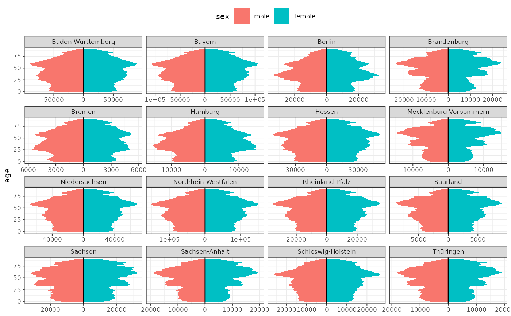

German Population data by state in 2023
Format
A data frame with 2912 rows and 5 columns:
- reporting_date
Date: Always "2023-12-31"
- state
Character: Name of the German state
- age
Numeric: Age from 0 to 89. Age 90 includes "90 and above"
- sex
Factor: "female" or "male"
- n
Numeric: Population size
Source
© Statistisches Bundesamt (Destatis), Genesis-Online, 2025: Bevölkerung: Bundesländer, Stichtag, Geschlecht, Altersjahre (12411-0013). Data licence Germany (dl-de/by-2-0) https://www-genesis.destatis.de/datenbank/online/statistic/12411/table/12411-0013
Examples
# Population pyramid
library(ggplot2)
library(dplyr)
population_german_states |>
filter(age < 90) |>
ggplot(aes(y = age, fill = sex, weight = n)) +
geom_bar_diverging(width = 1) +
geom_vline(xintercept = 0) +
scale_x_continuous_diverging() +
facet_wrap(~state, scales = "free_x") +
theme_bw(base_size = 8) +
theme_mod_legend_top()
